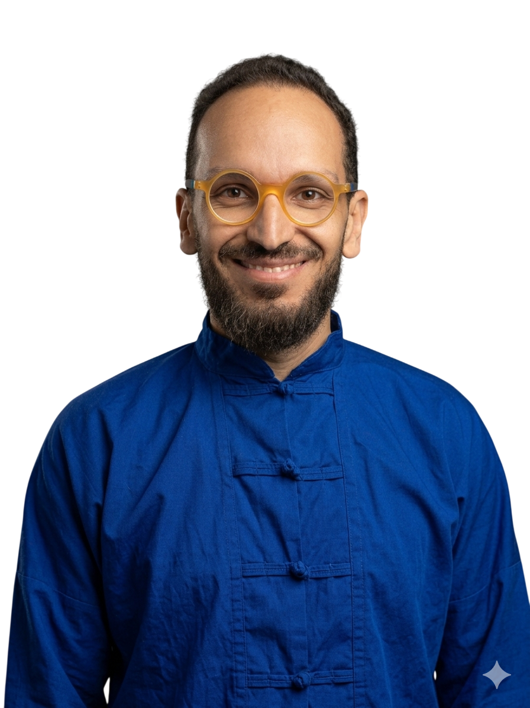
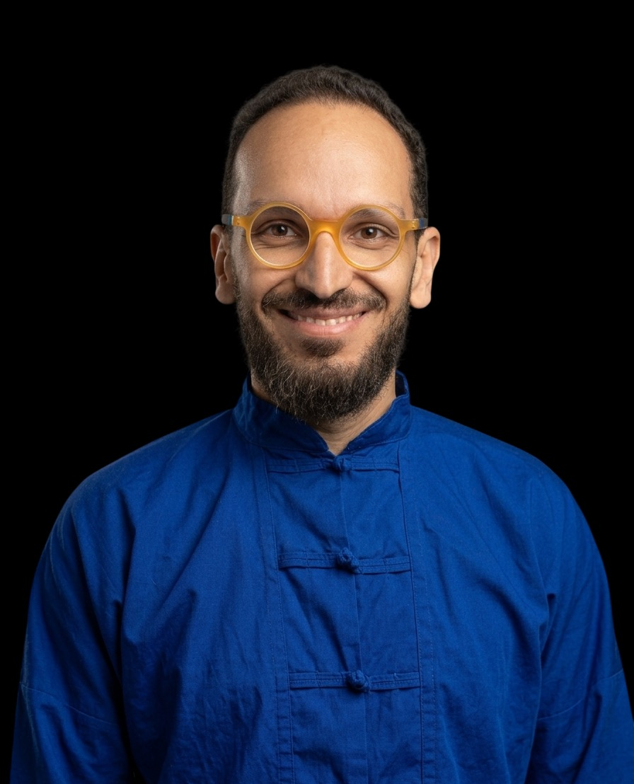

You have a product to launch, a team to structure, or an organization that needs to change. I step into the complexity, clarify, build, consolidate until you stand on your own.
Vous avez un produit à lancer, une équipe à structurer, ou une organisation qui doit changer. J'interviens dans la complexité, je clarifie, je construis, je consolide jusqu'à ce que vous soyez autonomes.
Product strategy · UX/UI · Team building · Agile · Change management · AI. 15 years. 3 countries.
Stratégie produit · UX/UI · Team building · Agile · Conduite du changement · IA. 15 ans. 3 pays.

You've changed tools twice. The teams work around them instead of with them. You've bought software that nobody uses. Meanwhile people build their own little workarounds in spreadsheets — and those are the ones that actually run the business.
Vous avez changé d'outil deux fois. Les équipes travaillent autour plutôt qu'avec. Vous avez acheté des logiciels que personne n'utilise. Pendant ce temps, des gens ont construit leurs propres contournements dans des tableurs — et ce sont eux qui font vraiment tourner le business.
Everyone is competent. Everyone works hard. But something between them doesn't connect — silos, miscommunication, priorities that aren't shared. The problem isn't individual. It's systemic. And nobody inside can see it clearly because everyone is too close.
Chacun est compétent. Chacun travaille dur. Mais quelque chose entre eux ne connecte pas — silos, incompréhensions, priorités non partagées. Le problème n'est pas individuel. Il est systémique. Et personne en interne ne le voit clairement parce que tout le monde est trop dedans.
A new product, a restructuring, a process overhaul. The direction is right. What's missing is someone who can translate vision into structure, structure into tools, tools into adoption. Someone who speaks the language of both the CEO and the developer.
Un nouveau produit, une restructuration, une refonte de process. La direction est bonne. Ce qui manque, c'est quelqu'un capable de traduire la vision en structure, la structure en outils, les outils en adoption. Quelqu'un qui parle à la fois le langage du dirigeant et du développeur.
A consulting firm costs a lot and delivers slides. A permanent hire takes time and creates commitment. What you sometimes need is someone who enters the system, understands it as a whole, acts at the right level — and leaves when the team stands on its own.
Un cabinet de conseil coûte cher et livre des slides. Un recrutement CDI prend du temps et engage. Ce dont vous avez parfois besoin, c'est de quelqu'un qui entre dans le système, le comprend dans sa globalité, agit au bon niveau — et part quand l'équipe tient seule.
Not a specialist who optimises one corner. Someone who sees the connections between tools, processes, people, and strategy — and can act on all of them.
Pas un spécialiste qui optimise un seul coin. Quelqu'un qui voit les connexions entre les outils, les process, les personnes et la stratégie — et qui peut agir sur tous ces leviers.
Most product designers cover one or two of these dimensions. I cover all seven — which means I can enter a team, understand the full picture, and move fast without waiting for everyone to align.
La plupart des product designers couvrent une ou deux de ces dimensions. J'en couvre sept — ce qui me permet d'entrer dans une équipe, comprendre la situation globale, et avancer vite sans attendre l'alignement général.
The first three are the technical foundation. The last four are what makes the difference between someone who executes and someone who transforms.
Les trois premières sont la fondation technique. Les quatre dernières sont ce qui fait la différence entre quelqu'un qui exécute et quelqu'un qui transforme.
Not the one everyone's been talking about. The one underneath. Fast audit, team interviews, no assumptions. You get a clear diagnosis and a direction you can act on.
Pas celui dont tout le monde parle. Celui qui est en dessous. Audit rapide, écoute de l'équipe, sans a priori. Vous repartez avec un diagnostic clair et une direction sur laquelle agir.
Design, prototype, build, iterate. Decisions are made. You see progress every week — not decks, not promises. Working product.
Design, prototype, code, itération. Les décisions sont prises. Vous voyez des avancées chaque semaine — pas des slides, pas des promesses. Un produit qui fonctionne.
Processes, culture, skills are in place. The team knows what to do and why. That's when I know the mission is done.
Process, culture, compétences sont en place. L'équipe sait quoi faire et pourquoi. C'est à ce moment que je sais que la mission est accomplie.
Entered as a developer. Identified a systemic problem no one saw — the internal tooling. Built a 150-page diagnosis, pitched the direction, got the green light. Created an internal CMS from scratch. Recruited and trained UX/UI designers. Implemented Agile (SCRUM). 3 → 25 people. Exited as Head of Product & Innovation.
Entré comme développeur. Identifié un problème systémique que personne ne voyait — les outils internes. Produit un diagnostic de 150 pages, pitché la direction, obtenu le feu vert. Créé un CMS maison de zéro. Recruté et formé des designers UX/UI. Mis en place l'Agile (SCRUM). 3 → 25 personnes. Sorti Resp. Produit & Innovation.
Bio food delivery startup. Built the full brand identity, e-commerce platform and a custom logistics app instead of buying an off-the-shelf tool. Recruited front-end devs. Implemented Holacracy from day one. UX research and conversion optimisation. Acquired by Le Comptoir Local.
Startup livraison bio. Construit l'identité visuelle complète, la plateforme e-commerce et une app logistique sur mesure plutôt qu'un outil inadapté. Recruté des devs front. Mis en place l'Holacratie dès le départ. Recherche UX et optimisation tunnel de vente. Racheté par Le Comptoir Local.
Product and design missions for clients (Genève-loisirs, Millet, Résiliences…). Brand identities, digital products, organisational transformation. IN CARNE — La Forge, a gamified React app for a 120-day men's program. Coaching and project creation support.
Missions produit et design pour clients (Genève-loisirs, Millet, Résiliences…). Identités visuelles, produits digitaux, transformation organisationnelle. IN CARNE — La Forge, app React gamifiée pour un programme de 120 jours pour hommes. Coaching et accompagnement à la création de projets.
Mission at France's main electricity distribution network operator. Functional framing, user stories, inter-squad coordination, backlog management, acceptance testing. SAFe (Scaled Agile) environment within a large organisation.
Mission chez le principal gestionnaire du réseau électrique en France. Cadrage fonctionnel, user stories, coordination inter-squads, gestion du backlog, recettes. Environnement SAFe (Agile à l'échelle) dans une grande organisation.
Entered as a developer. Identified a systemic problem no one else saw. Built the diagnosis, pitched the direction, got the green light. Created an internal CMS from scratch, recruited and led the team. Exited as Head of Product & Innovation.
Entré comme développeur. Identifié un problème systémique que personne ne voyait. Construit le diagnostic, pitché la direction, obtenu le feu vert. Créé un CMS maison de zéro, recruté et dirigé l'équipe. Sorti Resp. Produit & Innovation.
Read full case → Lire le cas complet →Built the full brand identity, e-commerce platform and a custom logistics app — instead of buying an off-the-shelf tool that did not fit. Holacracy from day one. 2.5M euros raised. Acquired by Le Comptoir Local.
Construit l'identité visuelle complète, la plateforme e-commerce et une app logistique sur mesure — plutôt qu'un outil inadapté. Holacratie dès le départ. 2,5M€ levés. Racheté par Le Comptoir Local.
Read full case → Lire le cas complet →Designed and shipped a tablet app replacing all paper workflows — attendance, meals, activities, special needs. Then led a full Holacracy transformation. Teams that resisted ended up loving it.
Conçu et livré une app tablette remplaçant tous les workflows papier — présences, repas, activités, spécificités. Puis transformation holacratie complète. Les équipes qui résistaient ont fini par adorer.
Read full case → Lire le cas complet →A PM without design sense makes blind trade-offs. A designer without product vision builds beautiful things nobody needs.
Un PM sans sens du design fait des arbitrages à l'aveugle. Un designer sans vision produit construit de belles choses dont personne n'a besoin.
A good roadmap fails if the team structure doesn't support it. Governance and product strategy have to be designed together.
Une bonne roadmap échoue si la structure d'équipe ne la soutient pas. Gouvernance et stratégie produit doivent être pensées ensemble.
A process nobody buys into is just paperwork. Change only sticks when the people inside understand why and feel part of it.
Un process que personne n'adopte, c'est juste de la paperasse. Le changement tient uniquement quand les personnes comprennent pourquoi et s'en sentent partie prenante.
Knowing what's buildable changes how you design. Knowing how to design changes what you build. The best solutions live at that intersection.
Savoir ce qui est faisable change la façon dont on conçoit. Savoir concevoir change ce qu'on construit. Les meilleures solutions vivent à cette intersection.
When I enter a team, I don't arrive with a ready-made answer. I look at the whole system — tools, processes, people, culture — and I identify where the actual leverage point is. Sometimes it's a tool. Sometimes it's a governance issue. Often it's both, plus something nobody had named yet.
Quand j'entre dans une équipe, je n'arrive pas avec une réponse toute faite. Je regarde le système entier — outils, process, personnes, culture — et j'identifie où est le vrai levier. Parfois c'est un outil. Parfois c'est une question de gouvernance. Souvent c'est les deux, plus quelque chose que personne n'avait encore nommé.
That's what 15 years across design, product, tech, coaching and org transformation gives you: the ability to act at the right level, not just the most obvious one.
C'est ce que 15 ans entre design, produit, tech, coaching et transformation organisationnelle donnent : la capacité d'agir au bon niveau, pas seulement au plus évident.
"He was able to implement the Scrum methodology with regular questioning. The result met expectations despite stakeholder skepticism. He protected the development team from pressure from various parties, and worked hard to train Product Owners and Scrum Masters to strengthen the team."
"Il a su mettre en place la méthodologie Scrum avec de régulières remises en question. Le résultat est à la hauteur des attentes malgré le scepticisme des parties prenantes. Il a su préserver l'équipe de développement de la pression et s'est efforcé de former des Product Owners et Scrum Masters pour renforcer l'équipe."

I started as an engineer — computer science, systems architecture, front-end development. Not the kind of tech guy who stays in a corner. The kind who asks why we're building this, who is it for, and what it changes for the people who use it every day.
J'ai commencé ingénieur — informatique, architecture systèmes, développement front-end. Pas le genre de tech qui reste dans son coin. Le genre qui demande pourquoi on construit ça, pour qui, et ce que ça change pour les gens qui l'utilisent au quotidien.
Over 15 years, that question took me from developer to designer, from designer to product lead, from product lead to innovation director. I built teams, tools, platforms, and governance frameworks — in agencies, startups, and large organizations. Each time, the challenge was the same: make things that actually work, with people who actually use them.
En 15 ans, cette question m'a conduit de développeur à designer, de designer à responsable produit, de responsable produit à directeur de l'innovation. J'ai construit des équipes, des outils, des plateformes, des modes de gouvernance — en agence, en startup, dans de grandes organisations. À chaque fois, le défi était le même : faire des choses qui marchent vraiment, avec des gens qui les utilisent vraiment.
In parallel, I trained in facilitation, organizational coaching, Holacracy, and change management. Not as add-ons — as tools that fill the gaps where pure tech falls short. Because a well-designed tool that nobody adopts is just an expensive mistake. And a good process that the team doesn't own is just paperwork.
En parallèle, je me suis formé à la facilitation, au coaching organisationnel, à l'Holacratie, à la conduite du changement. Pas comme des bonus — comme des outils qui comblent les lacunes où la tech pure ne suffit pas. Parce qu'un outil bien conçu que personne n'adopte, c'est juste une erreur coûteuse. Et un bon process que l'équipe ne s'approprie pas, c'est juste de la paperasse.
What gives me a particular perspective: I've always moved between disciplines — between making and thinking, between building and understanding people, between structure and creativity. That's what allows me to see the system as a whole, and to find the right lever, not just the most obvious one.
Ce qui me donne un regard particulier : j'ai toujours navigué entre les disciplines — entre faire et penser, entre construire et comprendre les gens, entre structure et créativité. C'est ce qui me permet de voir le système dans son ensemble, et de trouver le bon levier, pas seulement le plus évident.
In 45 minutes, we get clear on where you are, where you want to go, and what it takes to get there.
En 45 minutes, on pose la clarté sur où vous en êtes, où vous voulez aller, et ce qu'il faut pour y arriver.